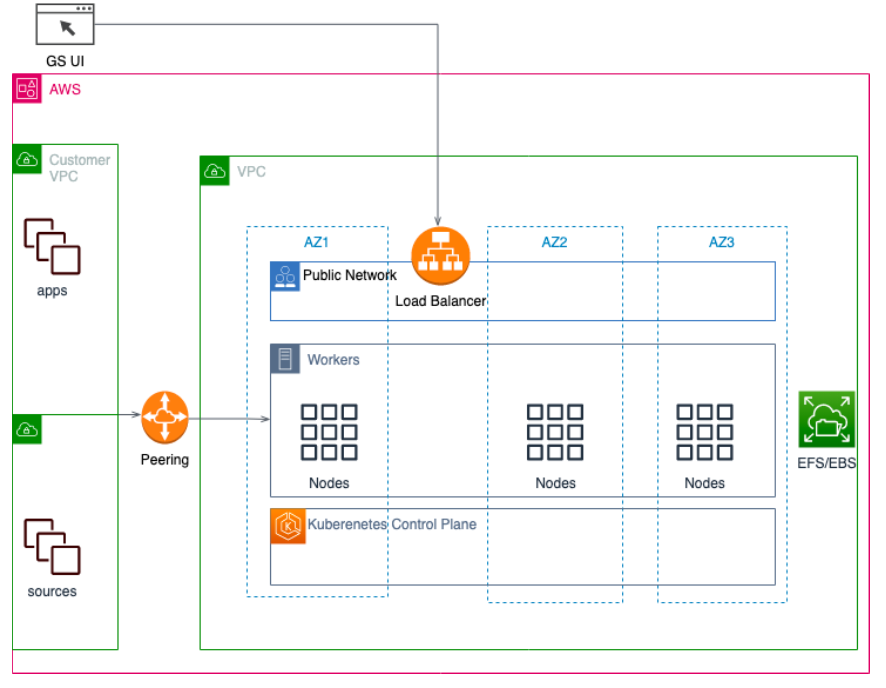
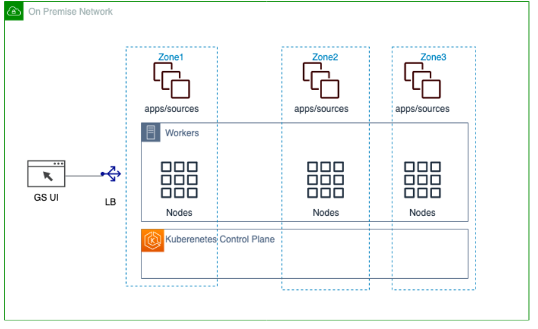
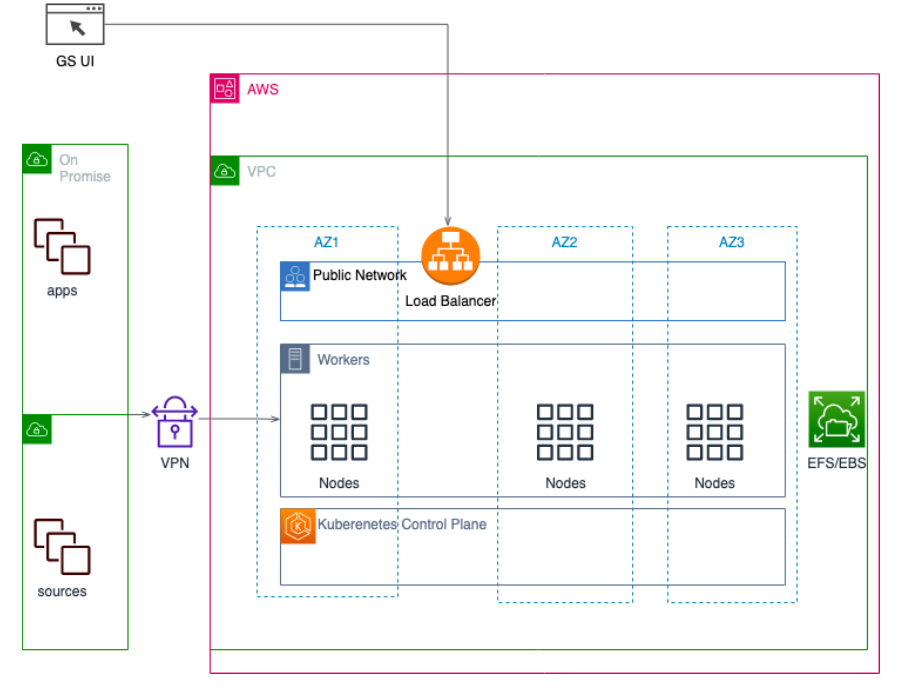
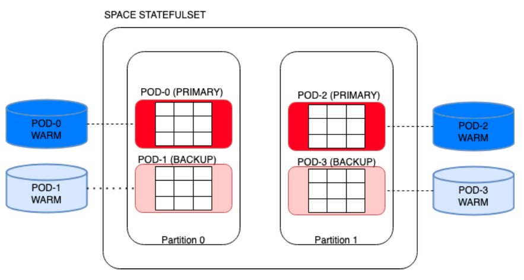
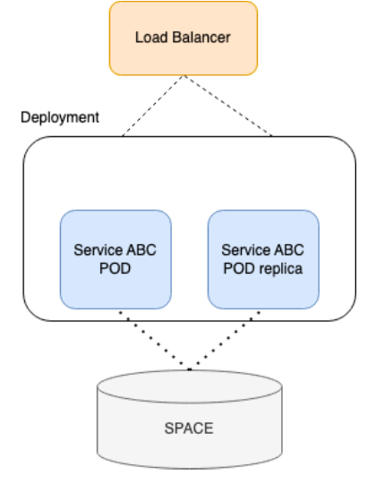

Kubernetes is an open-source orchestration system for automating the deployment, scaling and management of containerized applications.
Smart DIH (Digital Integration Hub) is at its core an encapsulation of multiple components that serve as an integration and acceleration of data streams.
On the outbound, Smart DIH can be configured to connect to different components of the client such as databases, streams, APIs and applications.
To that end, our Smart DIH uses Kubernetes as its orchestration solution and as an enabler for using advanced technologies like memory grid, streaming and automation.
Using Kubernetes, our Smart DIH solution offers production grade qualities in the following areas:
Network and compute control
High Availability and Self-Healing
Security
TCO reduction and maintainability
Smart DIH installation using Kubernetes Helm charts makes the deployment of the solution easier for operational staff as best practices and standard Kubernetes procedures are followed. The installation is flexible and can be tailored to user needs by handling a rich set of deployment parameters.
Follow this guide for installing Smart DIH using Kubernetes
Smart DIH can be installed on any of the major cloud vendors. Typically, start by setting a virtual network (i.e. VPC), then Kubernetes can be installed followed by Smart DIH. Connectivity to your current databases and applications can be established using appropriate gateways. Client applications can run within the same network, using a VPN connection or other means that adhere to security requirements (see security).
Your databases and applications can be held where they are today (e.g. on premises) so no migration is required.

Once Kubernetes is installed on-premise, be that a bare-metal installation or a private cloud, Smart DIH can be installed and connected to your existing applications.

A hybrid installation typically involves two environments that differ in some characteristics.
An example could be on-premise (e.g. an air-gapped environment) and cloud environment, where the applications that consume the data are divided between the two (for security reasons for example). In such a case 2 Smart DIH installations would be required and data would be replicated (full or partial) between the two.

The In-Memory Data Grid (IMDG) is at the center of Smart DIH. The data grid (also called a space) is maintained by an automation component (Kubernetes operator) that guarantees that the data will not be lost in the case of a pod going down.
Pods that serve the data grid, hold the data in memory and on disk (see Tiered Storage capabilities). The data grid is divided into partitions and each pod is assigned to hold a partition of the data as well as an availability mode - a “primary” or a “backup”. The Primary pods are online, however, if a primary pod goes down, the backup pod then becomes the primary and a new backup is quickly reassembled. This flow avoids downtime as data is seamlessly served from the pods memory by switching between a primary pod and its backup.
Partitions of the data grid are also backed up by the disk. This is a secondary measure to guarantee high availability. Availability for the data on disk (which can be larger than memory) is maintained by the storage facility and it is kept intact if the pod goes down.
In the diagram below, if POD-0 goes down POD-1 becomes the primary and Kubernetes will create a new POD-0 which will then be tagged as the backup.
In the case where a backup is recreated, the memory entries will be copied from the primary.

Low-code services are created by the user in order to open a channel for applications to interact with the data grid using a REST API. Due to this, it is important to maintain their high availability. These services are stateless and Smart DIH leverages the replication attribute of Kubernetes to maintain high availability.
In the diagram below, service “ABC” is replicated and serviced using a load balancer. In the case of one of the services going down the other continue to serve its client.

Smart DIH has been designed with strong security defaults in mind. These defaults include always-on authentication, authorization, encryption in transit and encryption at rest and no access from the Internet by default. Smart DIH includes the notion of roles that can be attached to users to preserve a minimal access policy.
Authentication and Authorization are at the core of the system. Access to every asset of the system is protected by these fundamentals. Smart DIH supports a rich set of Authentication and Authorization capabilities and can seamlessly connected with SSO (single sign on) and various IDPs (Identity providers),
Data is encrypted in transit. It is up to the user to open a public access and Gigaspaces will provide means to secure data at transit using protocols such as TLS. The typical connection is within the private network, This can be constructed using networking techniques such as VPN, Private link, VPC peering or other related protocols.
Encryption can be set up by Smart DIH or by the customer to ensure that the data is secured at rest.
Smart DIH is installed with standard Kubernetes tools using common practices and flows. Helm is the go-to application used for installing Smart DIH and enables installation in single command using a Smart DIH Helm umbrella chart installation. An umbrella chart is when a chart is created for the purpose of grouping together related subcharts/services, such as to compose a whole application or deployment. A rich set of values can be applied upon installation, creating a customized deployment. Upgrades can leverage these tools so that future enhancements of Smart DIH can also take place with minimal effort.
Kubernetes has built-in mechanisms that expand and contract resources depending on load (given cloud support). This means that during run-time the system deployment is optimized for the current workload.
Kubernetes tools support various operations for managing the system. This includes control resources count, security, metrics and logging parameters. Smart DIH in this sense provides additional controls at the Smart DIH level (SpaceDeck) which may also affect the underlying deployment by leveraging Kubernetes operators.